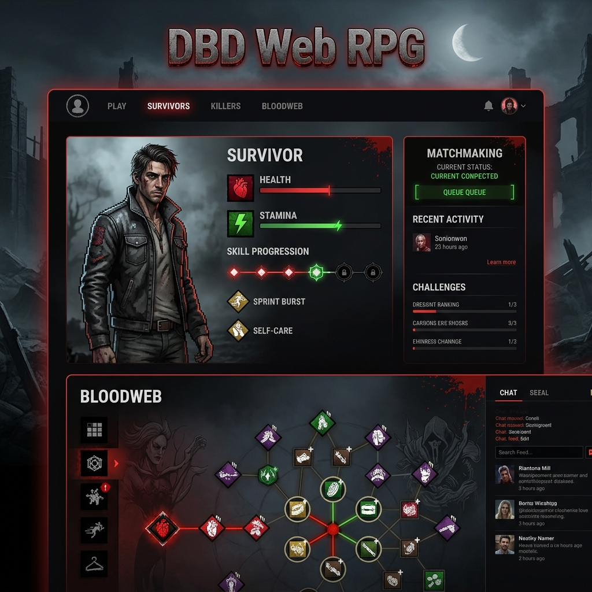

Caos: Péndulo Doble
Simulación numérica interactiva y resolución de EDOs acopladas (Lagrangianas) usando métodos numéricos en Python.
Pasa el cursor para excitar
Combino el rigor analítico de la física teórica con herramientas avanzadas de programación para simular sistemas dinámicos y modelar patrones complejos de datos. Especializada en Python y R.
Lenguaje principal para modelado matemático, simulación física y scripting general.
Análisis estadístico avanzado, limpieza de datos y visualizaciones complejas mediante ggplot2.
Cálculo matricial, álgebra lineal computacional y resolución de EDOs (Ecuaciones Diferenciales Ordinarias).
Manipulación, análisis de datos tabulares complejos y preparación de datasets estructurados.
Creación de interfaces gráficas interactivas para visualización científica y control de variables en simulaciones.
Diseño y consulta de bases de datos relacionales y no relacionales con SQL, MongoDB y Neo4j (grafos).
Desarrollo de software robusto aplicando Programación Orientada a Objetos (POO).
Despliegue y ciclo de vida de modelos de Machine Learning. AWS Certified AI Practitioner.
Simulación numérica interactiva y resolución de EDOs acopladas (Lagrangianas) usando métodos numéricos en Python.
Modelado tridimensional de sistemas dinámicos caóticos atmosféricos. Creado originalmente en 2021-2022 y actualizado en 2025 para adaptarlo al cambio de sintaxis de PyQt5.
Juego de rol web inspirado en Dead by Daylight que demuestra conceptos avanzados de Programación Orientada a Objetos (POO), estructuración de clases, inventario, estados y lógica de combate/supervivencia.
